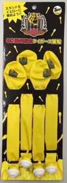
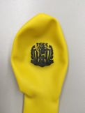

ＳＴマーク表示商品の回収に関するお知らせ【製品回収】
株式会社ケーツーステーション（本社：大阪府岸和田市）が製造・販売している商品「80周年記念阪神タイガース風船」について、当該商品のプラスチック製吹口の引張強度が玩具安全（ST）基準に満たないものが混入していることが判明しました。
同社はこれらの製品の流通在庫の回収を行うとともに、消費者からも商品の回収を行うこととし、平成27年8月28日、自社ホームページ（ http://www.k2-st.co.jp ）で告知しています。
商品名 不適合箇所 商品画像 80周年記念タイガース風船
ＳＴ合格番号：
4515732211588販売期間：
2015年3月～7月出荷数量：
235,600ｾｯﾄ一部の製品のプラスチック製吹口についてST基準で定める引張強度が不足。

当協会としましては、ＳＴ基準ＳＴマーク制度の確実な実施を図り、ＳＴマーク使用許諾契約企業に対し注意喚起を行うとともに、ＳＴマークの適正な使用を確保してまいる所存ですので宜しくお願い致します。
平成27年8月28日
一般社団法人 日本玩具協会